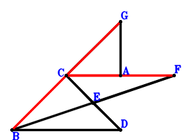

Exercise 547： Let E be the midpoint of FB and DC. GA⊥DB and DC⊥CG. Given that G, B, C are collinear and F, C, A are collinear, prove that BC\(\cdot\)GC=FC\(\cdot\)CA.

\(\because \) E is the midpoint of DC \(\therefore \small\overrightarrow{CE}=\dfrac{\small\overrightarrow{CD}}{2}\).\(\because \) E is the midpoint of FB \(\therefore \small\overrightarrow{CF}=- \small\overrightarrow{CB} + 2 \small\overrightarrow{CE}=- \small\overrightarrow{CB} + \small\overrightarrow{CD}\).\(\because \) DC⊥CG \(\therefore \small\overrightarrow{CD} \cdot \small\overrightarrow{CG}=0\) . . . . . . \(①\)\(\because \) GA⊥DB \(\therefore \small\overrightarrow{DB} \cdot \small\overrightarrow{GA}=\left(\small\overrightarrow{CA} - \small\overrightarrow{CG}\right) \cdot \left(\small\overrightarrow{CB} - \small\overrightarrow{CD}\right)=\small\overrightarrow{CA} \cdot \small\overrightarrow{CB} - \small\overrightarrow{CA} \cdot \small\overrightarrow{CD} - \small\overrightarrow{CB} \cdot \small\overrightarrow{CG} + \small\overrightarrow{CD} \cdot \small\overrightarrow{CG}=0\) . . . . . . \(②\)In conclusion, \(\small\overrightarrow{CA} \cdot \small\overrightarrow{CF} + \small\overrightarrow{CB} \cdot \small\overrightarrow{CG}=\small\overrightarrow{CA} \cdot \left(- \small\overrightarrow{CB} + \small\overrightarrow{CD}\right) + \small\overrightarrow{CB} \cdot \small\overrightarrow{CG}=- \small\overrightarrow{CA} \cdot \small\overrightarrow{CB} + \small\overrightarrow{CA} \cdot \small\overrightarrow{CD} + \small\overrightarrow{CB} \cdot \small\overrightarrow{CG}=①-②=0\)\(\because\) G, B, C are collinear and F, C, A are collinear \(\therefore\) BC\(\cdot\)GC=FC\(\cdot\)CA.